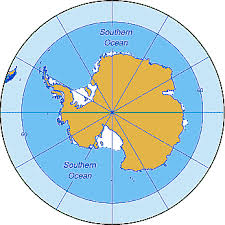

Océano Antártico

-
Se encuentra en el extremo norte del planeta, rodeando el Polo Norte.
-
Está cubierto por hielo la mayor parte del año y es el más pequeño de los cinco océanos.
-
Aunque también se le llama Glacial Ártico, es una parte vital del sistema climático global
Regresar